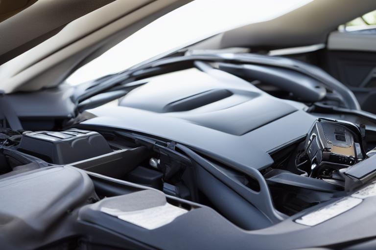

Señales claras de una batería de vehículo débil y cómo testearla tú mismo

Cuando la batería de tu vehículo comienza a fallar, puedes notar varios síntomas y, con un poco de conocimiento, puedes testearla tú mismo. Aprender a identificar estos signos y realizar el test básico puede ahorrarte molestias y costos en el futuro.
1. Dificultad al arrancar el motor
Uno de los primeros signos de que la batería de tu vehículo está débil es que el motor se resiste a arrancar. Esto puede ocurrir con un clic suave y lento, en lugar del arranque firme que esperas.
2. Luces apagadas
Las luces de tu vehículo pueden parecer más débiles y menos brillantes. También, si la batería está muy baja, las luces del tablero pueden parpadear o no encenderse en absoluto.
3. Motor que ruge
A veces, el motor de tu vehículo puede rugir o hacer un ruido extraño antes de arrancar. Esto se debe a que la batería no tiene suficiente energía para alimentar todo el sistema eléctrico.
4. Buzón que no suena
Si tu vehículo tiene un buzón, es posible que no suene con fuerza o no se active cuando lo tocas. Esto puede ser un indicativo de que la batería está agotada.
5. Problemas de ignición
Puedes notar que el sistema de encendido de tu vehículo no funciona correctamente. Las luces de advertencia en el tablero pueden encenderse, o incluso los frenos y el estacionamiento pueden estar más débiles.
Cómo testear la batería por ti mismo
Testear la batería de tu vehículo es sencillo y puedes hacerlo con solo un voltmetro. Aquí te damos los pasos detallados:
-
Preparación: Asegúrate de tener un voltmetro de alta calidad a mano. Los voltmetros de automóviles son convenientes y económicos.
-
Ubicación de la batería: Encuentra la ubicación de la batería en tu vehículo. Generalmente, está en el lado izquierdo del habitáculo, cerca del motor.
-
Desconectar el sistema eléctrico: Antes de comenzar, asegúrate de que el sistema eléctrico esté apagado para evitar cortocircuitos.
-
Medición: Conecta el voltmetro a la batería. El terminal negativo (negro) del voltmetro a la terminal negativa de la batería, y el terminal positivo (rojo) del voltmetro a la terminal positiva de la batería. Luego, lee la medicación en el voltmetro.
-
Interpretación de los resultados: Si la lectura es de 12.6 voltios o más, tu batería está en buenas condiciones. Si la lectura es inferior a 12.4 voltios, es hora de que reemplaces la batería.
Ejemplo práctico
Imagina que estás en el aparcamiento de un estacionamiento y notas que tu vehículo no arranca con normalidad. Pruebas a encender el motor y solo escuchas un ruido de arranque suave. Luego, notas que las luces del tablero están más tenues y que el buzón no suena con fuerza.
Decides testear la batería. Encuentras la batería en el lado izquierdo del habitáculo y conectas el voltmetro. La lectura en el voltmetro es de 12.2 voltios. Esto indica que la batería está débil y que es hora de reemplazarla.
Cuidado adicional
Mantén la batería en buen estado realizando mantenimientos regulares. Verifica la carga de la batería cada 6 meses y sustitúe la batería si está cerca de su fecha de caducidad.
Recuerda que un vehículo sin una batería fuerte es como un hombre sin fuerzas para caminar: puede que funcione, pero es mejor tenerlo en óptimas condiciones.
¡Y ahí tienes todo lo que necesitas saber sobre los síntomas de una batería débil y cómo testearla tú mismo!